机器视角的控制流(Control)
我们首先简单查看如下例子：
- C语言源代码
extern void op1(void);
extern void op2(void);
void decision(int x){
if(x){
op1();
}else{
op2();
}
}
- 上述代码翻译为汇编代码的形式，使用
-Og的模式进行编译，生成如下汇编代码
/*
说明：
%edi 寄存器中存放的数据为 x
testl 指令用于测试两个操作数相与的结果，操作大小为l即4个字节
%edi & %edi 当寄存器中%edi数为0时，设置条件码ZF为1
je 指令表示条件跳转，即当条件码ZF为1时，跳转至.L2标签处继续执行
.L2 标签对应于C源码中 else 分支内部的逻辑
若 %edi 不为0，则继续执行 call op1@PTL指令即对应于 if(x)分支的内容
.L1 标签对应于函数执行完毕，返回的逻辑
*/
decision:
.LFB0:
endbr64
subq $8, %rsp
testl %edi, %edi
je .L2
call op1@PLT
.L1:
addq $8, %rsp
ret
.L2:
call op2@PLT
jmp .L1
条件码
CPU除了保留整数寄存器，还会存在单比特位的条件码寄存器，用于描述最近的算术或逻辑操作。这些条件码是执行代码分支跳转的关键。
- CF(Carry Flag) 进位标志，针对无符号数溢出产生进位的标志
- ZF(Zero Flag) 零标志，当运算结果为0时，该标志置为1
- SF(Sign Flag) 负数标志，当运算结果为负数时，该标志置为1，针对有符号数
- OF(Overflow Flag) 溢出标志，当补码运算产生溢出时，设置为1，溢出包括正数溢出和负数溢出
改变条件码的相关指令：
- 以下表格中的指令除了
leaq都会改变条件码 - 逻辑操作CF和OF标志位设置为0
- 对于移位指令，CF标志位设为最后一位移出的位同时OF标志位设为0
- 自增和自减指令会改变OF和ZF条件码，但是CF保持不变
| Instruction | Effect | Description |
|---|---|---|
| leaq S, D | D <- &S | 加载有效地址 |
| INC D | D <- D + 1 | 寄存器数据原位加1 |
| DEC D | D <- D - 1 | 寄存器数据原位减1 |
| NEG D | D <- -D | 寄存器数据的逆 |
| NOT D | D <- ~D | 寄存器数据按位取反 |
| ADD S, D | D <- D + S | 执行加法操作 |
| SUB S, D | D <- D - S | 执行减法操作 |
| IMUL S, D | D<- D * S | 执行乘法操作 |
| XOR S, D | D <- D ^ S | 执行按位异或操作 |
| OR S, D | D <- D | S |
| AND S, D | D <- D & S | 执行按位与操作 |
| SAL k, D | D <- D << k | 左移操作 |
| SHL k, D | D <- D << k | 左移操作等价于 SAL |
| SAR k, D | D <- D >> k | 算术右移 |
| SHR k, D | D <- D >> k | 逻辑右移 |
CMP指令类和TEST指令类可以不用修改任何寄存器就改变条件码test指令多用于比较数是否为0cmp指令多用于比较两个数的大小
| Instruction | Effect | Description |
|---|---|---|
| cmp(b,w,l,q) S1, S2 | S2 - S1 | 比较两个数 |
| test(b,w,l,q) S1, S2 | S1 & S2 | 计算两个数相与 |
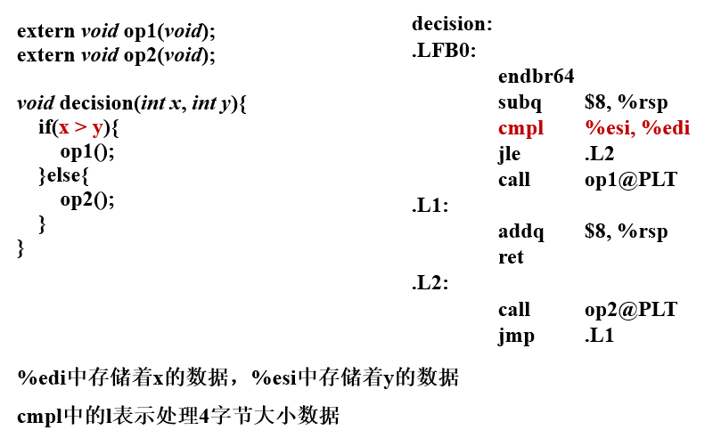
- 除了直接读取条件码，还存在三种可以利用条件码的方式
- 依据条件码的结合将一个字节的位设为0或1，下图所示的
SET指令类，该指令的目标可以是寄存器也可以是内存地址，但是仅仅设置低位的一个字节 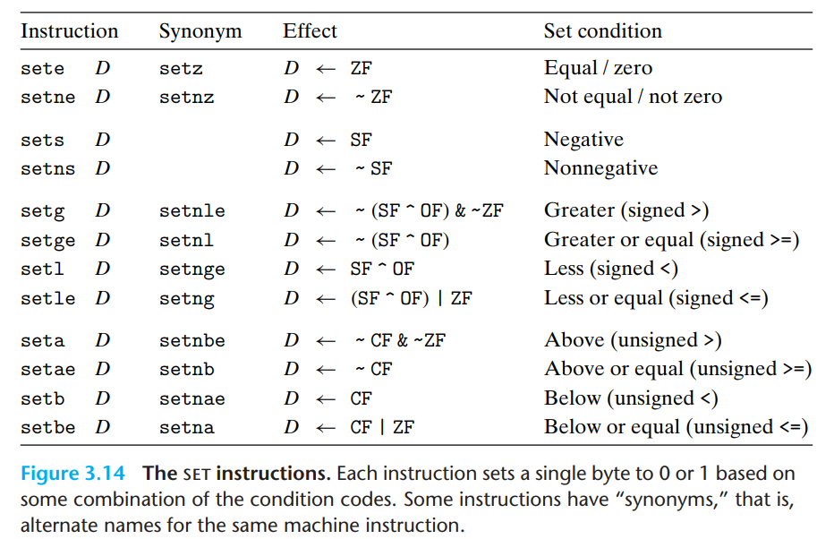
- 依据条件码的结合将一个字节的位设为0或1，下图所示的
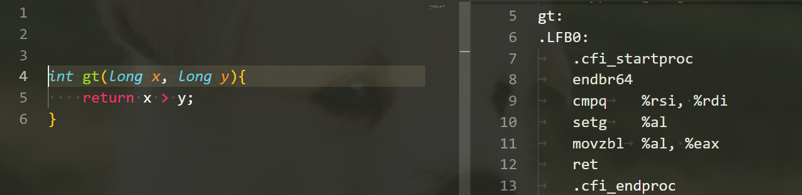 * 条件的跳转至其它程序部分
跳转指令分为无条件跳转和有条件跳转。
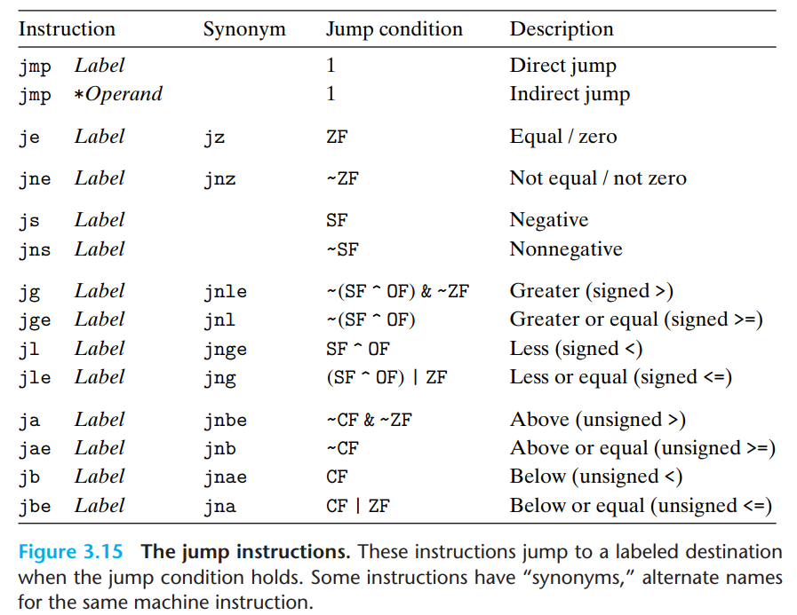
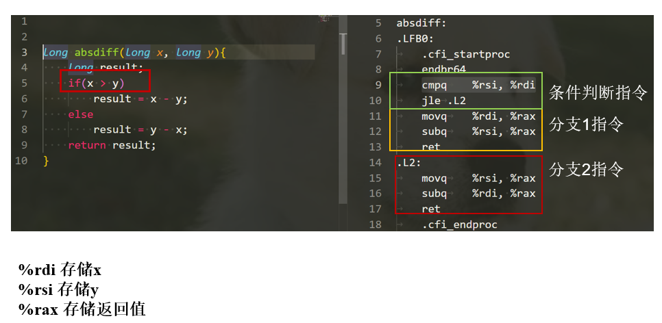
跳转指令编码，汇编代码中跳转目标是使用符号标签表示。当后续的编译器和链接器处理后，会将符号标签转换为实际的二进制地址。如何编码跳转目标，存在两种 方式。一种是PC 相关的编码，即目标指令地址和当前下一条指令地址的差值，这些偏移量可以编码为1，2，4bytes。第二种为绝对编码，直接使用4个字节 编码目标指令地址。
* 条件的传输数据(Conditional Moves)
充分利用计算能力，分别同时计算不同分支的结果，当判断条件确定时将目标分支的计算结果移动至返回值。
下图采用O1优化模式。
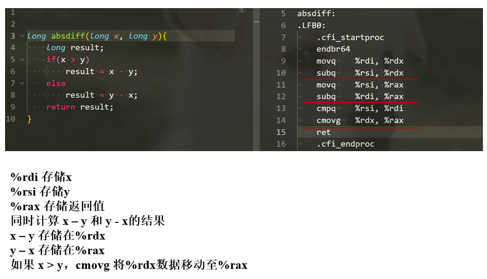
当然条件移动指令也可能存在副作用，如果不同分支存在相互干扰或不安全行为可能会影响计算结果
循环（Loop）
do-while 循环方式
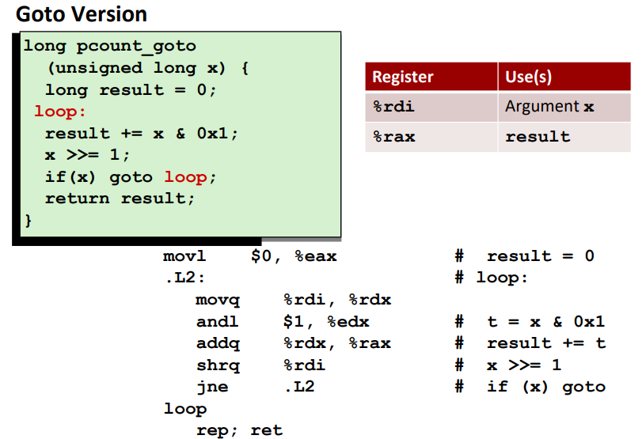
while 循环方式
当使用-Og模式时，while循环变为汇编代码时，会首先进行初始化过程，然后跳转至测试代码部分，最后依据测试结果判断是否进入循环体。
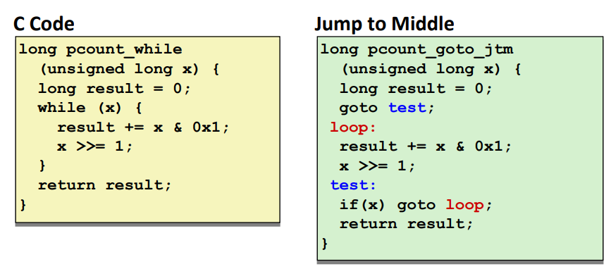
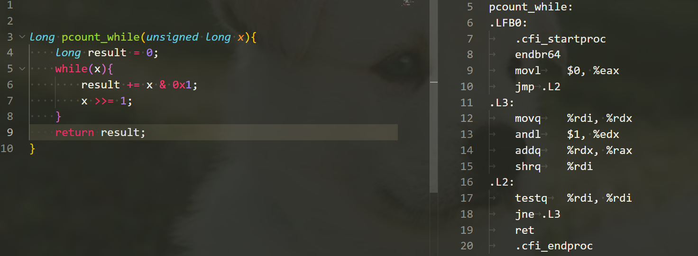
当使用-O1优化模式时，会先将while循环转变为do-while循环，再翻译成汇编代码。
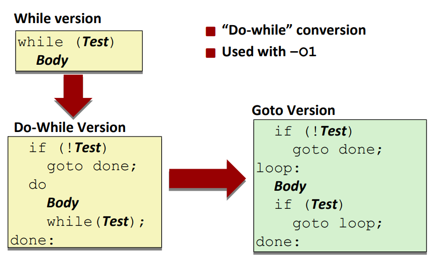
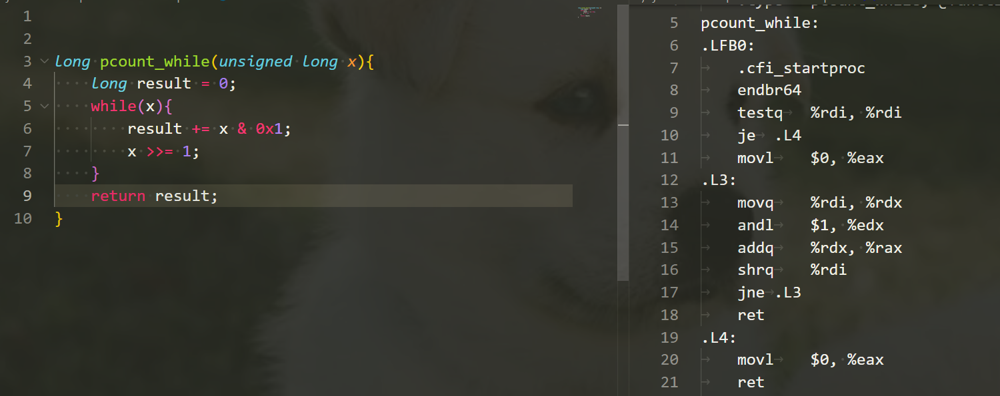
for 循环方式
为什么初始测试可以被优化掉？一个原因是代码编写者应该确保初始条件可以进入循环，否则该代码没有任务意义。其次，如果初始测试条件不满足，可以在编译器阶段进行优化代码。 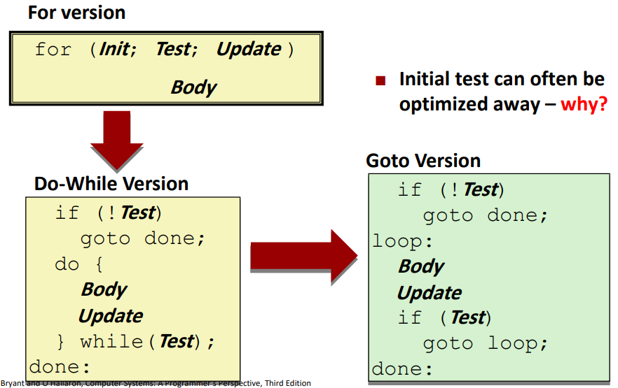
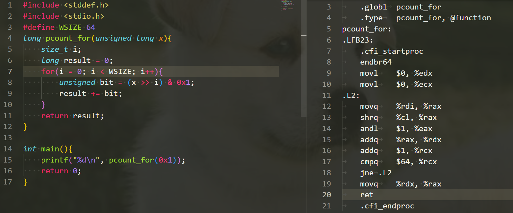
switch 语句
机器视角的程序（Procedures）
程序是一种软件抽象，用于打包实现特定功能的代码片段。程序调用涉及多个方面的机制：
- 传递控制权，程序计数器需要设置为被调用函数的起始位置
- 传递数据，调用函数需要将参数数据传递给被调用函数使用
- 分配和释放内存空间
Run-time Stack
栈是一种先进后出的数据结构，十分适合用于函数调用的内存管理。
控制权转移
当函数P内部调用函数Q时，需要将程序计数器设置为函数Q的起始地址，但是为了函数Q执行完毕可以正确返回函数P中指定地址，需要将返回地址进行记录。
在x86-64机器中，利用指令call Q完成上述功能。
| Instruction | Description |
|---|---|
| call Label | 将当前指令的下一条指令地址推入栈中，并将PC设为Label地址 |
| call *Operand | 将当前指令的下一条指令地址推入栈中，并将PC设为操作数所指定的地址 |
| ret | 将栈上的地址弹出记为A，并将PC设为地址A |
call 指令的动作：
1. 寄存器%rsp减去8个字节（这8个字节用于存储函数执行完毕返回的地址）
2. 寄存器%rip设置为被调用函数的起始地址
ret 指令的动作：
1. 弹出寄存器%rsp所指向内存地址的8个字节(地址A)
2. 将寄存器%rsp = %rsp + 0x8
3. 将寄存器%rip设为地址A
数据转移
x86-64结构下函数参数传递大部分通过寄存器实现，寄存器传递参数存在约定俗成的做法：
- x86-64下至多可以通过寄存器传递6个整数参数(包括指针)，使用顺序（从左往右）如下图所示：
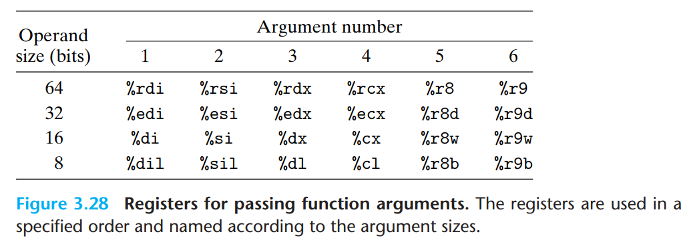
- 当函数参数超过6个，剩余参数通过栈进行传递，入栈的顺序为从右往左
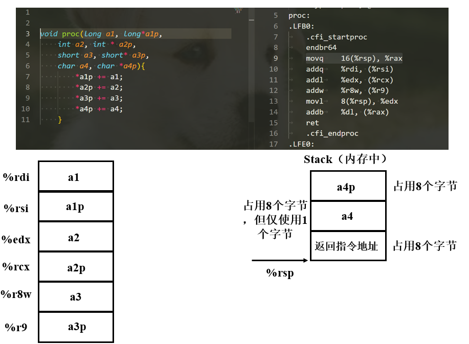
栈上数据的局部存储
- 没有足够的寄存器保存所有局部数据
- 取地址运算符用于某个局部变量
- 一些局部变量是数组或结构体
函数的局部变量以相反的顺序存储在栈上？
寄存器上的局部变量
所有程序都共享相同的寄存器，当函数不断调用，被调用函数可能覆盖寄存器的值，这导致之前的函数在之后无法访问原始的数据。为了保证局部变量在寄存器上的 安全使用，x86-64采用了相同的惯例让所有程序调用都遵循。
数组
一维数组
数组是内存上连续的字节单元，数组名作为数组首元素的地址。
- example
#include <stdio.h>
#define ZLEN 5
typedef int zip_dig[ZLEN];
int get_digit(zip_dig z, int digit){
return z[digit];
}
void zincr(zip_dig z){
size_t i;
for(i = 0; i < ZLEN; i++){
z[i]++;
}
}
int main(){
// cmu的值为数组首元素的地址
zip_dig cmu = {1, 2, 3, 4, 5};
int ret = get_digit(cmu, 1);
printf("%d\n", ret);
zincr(cmu);
return 0;
}
- 汇编代码
; get_digit
0x00007ff7a9e21450 <+0>: movslq %edx,%rdx
; %rcx存放cmu首地址， %rdx存放索引digit, (%rcx, %rdx, 4) 表示 cmu + digit * 4
0x00007ff7a9e21453 <+3>: mov (%rcx,%rdx,4),%eax
0x00007ff7a9e21456 <+6>: ret
; zincr
0x00007ff69fd51457 <+0>: mov $0x0,%eax
0x00007ff69fd5145c <+5>: jmp 0x7ff69fd5146f <zincr+24>
0x00007ff69fd5145e <+7>: lea (%rcx,%rax,4),%r8
0x00007ff69fd51462 <+11>: mov (%r8),%edx
0x00007ff69fd51465 <+14>: add $0x1,%edx
0x00007ff69fd51468 <+17>: mov %edx,(%r8)
0x00007ff69fd5146b <+20>: add $0x1,%rax
0x00007ff69fd5146f <+24>: cmp $0x4,%rax
0x00007ff69fd51473 <+28>: jbe 0x7ff69fd5145e <zincr+7>
0x00007ff69fd51475 <+30>: ret
多维数组
#include <stdio.h>
#define ZLEN 5
typedef int zip_dig[ZLEN];
int main(){
zip_dig phg[4] = {
{1, 2, 0, 4, 5},
{1, 6, 3, 4, 5},
{1, 2, 3, 0, 5},
{1, 2, 8, 4, 5}
};
printf("%p\n", phg);
printf("%p\n", phg[0]);
printf("%p\n", &phg[0][0]);
printf("%p\n", phg + 1); // 等价 第二行数组的首元素地址
printf("%p\n", phg[1]);
printf("%p\n", &phg[1][0]);
printf("%d\n", sizeof(phg)); // 80字节，整个二维数组的大小
printf("%d\n", sizeof(phg + 1)); // 单个地址大小，8个字节
printf("%d\n", sizeof(phg[1])); // 单个一维数组大小，20字节
printf("%d\n", sizeof(phg[1][0])); // 单个元素大小，4字节
printf("%p\n", phg + 1); // 依据元素大小缩放，相当于地址加 20 字节
printf("%p\n", phg[0] + 1); // 依据元素大小缩放，相当于地址加 4 字节
printf("%p\n", &phg[0][0] + 1);
return 0;
}